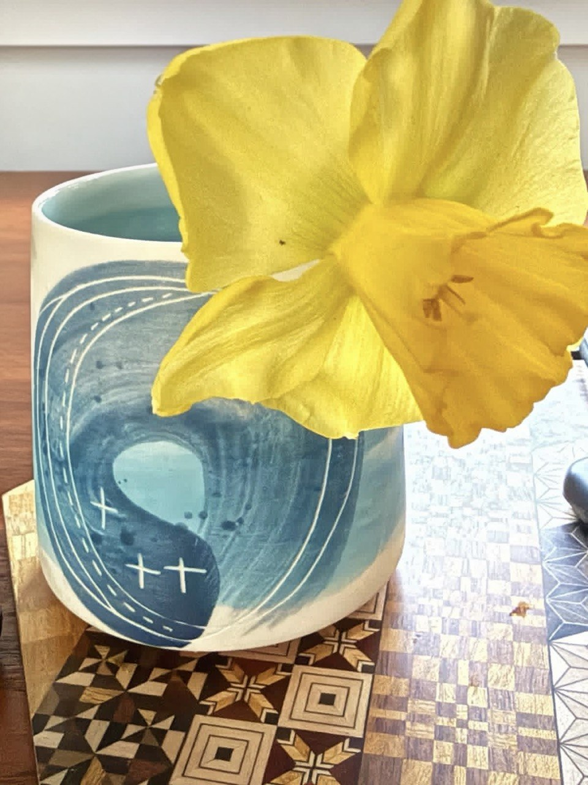

I wandered lonely as a cloud
That floats on high o’er vales and hills,
When all at once I saw a crowd,
A host, of golden daffodils.— William Wordsworth, 1807
Growing up in India, one thing we sometimes had to do in language classes was to recite poems. This took different forms: sometimes we were graded in class, and sometimes there were recitation competitions. In middle school, I remember preparing for hours with my grandmother, trying to commit this famous poem by William Wordsworth to memory. Surprisingly, I loved this exercise, and even today, 40 years later, I still remember snippets of the poem. To me, however, the daffodil was an English flower, a Wordsworth flower, an alien flower from a different world.
Nargis was a famous female actor of an earlier generation, starring opposite Raj Kapoor in numerous hits in the 1950s. This was the first time I encountered the word nargis, which I later learned was an Urdu word associated with eyes. The word is also common in Urdu poetry and ghazals, specifically for the kind of eyes that are large, heavy-lidded, and a little absent, the eyes of someone looking inward. I had never thought to look up the etymology of this word.
A few weeks ago, I came across the answer: Nargis is the Persian name for the daffodil. The scientific name of the daffodil is Narcissus poeticus, “of poets.” The same flower. It is no wonder, then, that poets from England to India have written many words expressing their appreciation of the daffodil’s beauty, and that the scientific name for one type of daffodil is Narcissus poeticus—Narcissus “of the poets.”
As an aside, I came across this Persian word in the writings of Syed Mujtaba Ali, a renowned Bengali author, polyglot, and travel writer. The author describes fields of daffodils he encounters during his travels in Afghanistan. I highly recommend his writing.
But the story gets more interesting. Narcissus poeticus is named after the Greek youth Narcissus, who fell in love with his own reflection in a pool and wasted away there. The flower is said to have grown where he died. From that myth came narcissism as a concept, which Freud borrowed in 1914 to name pathological self-absorption. From the flower came nargis in Persian, which spread into Urdu, Hindi, and Bengali as a poetic convention for eyes, and eventually became the name of one of the most celebrated female actors of Bollywood.
I find that a strange and satisfying kind of convergence. A story meant as a warning about vanity ended up in a psychiatry textbook, a garden catalogue, a ghazal, and the name of a famous actor, none of them obviously connected until you look at the name.

Here is an image of a daffodil grown in our garden in Cupertino, California, a continent and landmass far removed from the Greek, Persian, and Indian origins of the word Nargis.
Ritwik Sinha — Cupertino, CA